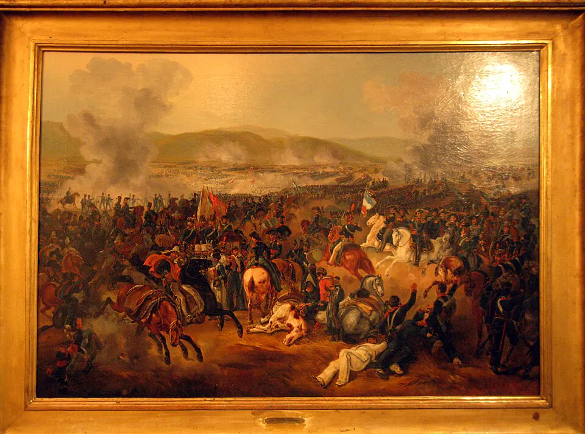

Batalla de Maipú

El 19 de marzo de 1818, el ejército realista de Mariano Osorio sorprendió de noche a los patriotas en Cancha Rayada, cerca de Talca. La dispersión de las tropas y la noticia de que Bernardo O'Higgins estaba herido sembraron el pánico en Santiago, donde Manuel Rodríguez ayudó a organizar la defensa y a levantar el ánimo de la población. José de San Martín logró reagrupar al ejército en pocos días.
El 5 de abril, en los llanos de Maipú, al suroeste de Santiago, los patriotas derrotaron a Osorio tras una dura batalla. O'Higgins, que llegó herido al final del combate, abrazó a San Martín, escena conocida como el abrazo de Maipú. La victoria aseguró la independencia del centro de Chile y permitió organizar la escuadra nacional y la expedición libertadora del Perú, que zarpó en 1820. Sin embargo, la guerra siguió en el sur, donde guerrillas realistas resistieron varios años en la llamada "guerra a muerte". Pocas semanas después de la batalla, Manuel Rodríguez fue asesinado mientras estaba detenido, un crimen cuya responsabilidad todavía se discute.
Versión para niños
Poco después de declarar la independencia, los patriotas sufrieron una derrota por sorpresa cerca de Talca y Bernardo O'Higgins resultó herido. En Santiago hubo mucho miedo, pero Manuel Rodríguez animó a la gente a no rendirse. El 5 de abril de 1818, el ejército dirigido por José de San Martín venció a los realistas en los llanos de Maipú. Al terminar, O'Higgins llegó con su brazo herido y ambos líderes se dieron un gran abrazo.
Para maestros
Nivel sugerido: 6° básico
Objetivo: Explicar la importancia de la batalla de Maipú en la consolidación de la independencia y relacionarla con la expedición libertadora del Perú.
Preguntas para la clase:
- ¿Por qué la victoria de Maipú fue más decisiva que la de Chacabuco?
- ¿Cómo reaccionó la población de Santiago después de Cancha Rayada?
- ¿Qué representa el abrazo de Maipú para la historia de Chile y Argentina?
Actividad (20–30 min): Los estudiantes observan una reproducción de una pintura del abrazo de Maipú, como la de Pedro Subercaseaux, y describen personajes, gestos y emociones. Luego discuten qué mensaje quiso transmitir el pintor y si una pintura hecha décadas después es una fuente confiable.
Fuentes sugeridas: Museo Histórico Nacional; Memoria Chilena; Biblioteca Nacional Digital.
Objetivos de Aprendizaje (Currículum Nacional)
- 6° básico · HI06 OA 02 Explicar el desarrollo del proceso de independencia de Chile … las batallas de Rancagua, Chacabuco y Maipú, y la Declaración de la Independencia
- 8° básico · HI08 OA 16 Explicar la independencia de las colonias hispanoamericanas como un proceso continental … y analizar en este marco el proceso de Independencia de Chile
Personajes
Revisión humana pendiente. Cómo se revisa · Reportar un error
Cómo citar: Historia de Chile. (2026). Batalla de Maipú. En Historia de Chile: atlas y línea de tiempo. https://moises-salgado.github.io/historia-de-chile/momento/batalla-de-maipu.html